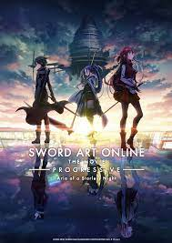
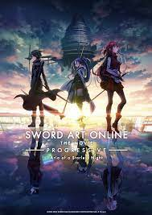

In the near future, a Virtual Reality Massive Multiplayer Online Role-Playing Game (VRMMORPG) called Sword
Art Online has been released where players control their avatars with their bodies using a piece of
technology called Nerve Gear. One day, players discover they cannot log out, as the game creator is holding
them captive unless they reach the 100th floor of the game's tower and defeat the final boss. However, if
they die in the game, they die in real life. Their struggle for survival starts now...
One year after the SAO incident, Kirito is approached by Seijiro Kikuoka from Japan's Ministry of Internal
Affairs and Communications Department "VR Division" with a rather peculiar request. That was an
investigation on the "Death Gun" incident that occurred in the gun and steel filled VRMMO called Gun Gale
Online (GGO). "Players who are shot by a mysterious avatar with a jet black gun lose their lives even in the
real world..." Failing to turn down Kikuoka's bizarre request, Kirito logs in to GGO even though he is not
completely convinced that the virtual world could physically affect the real world.